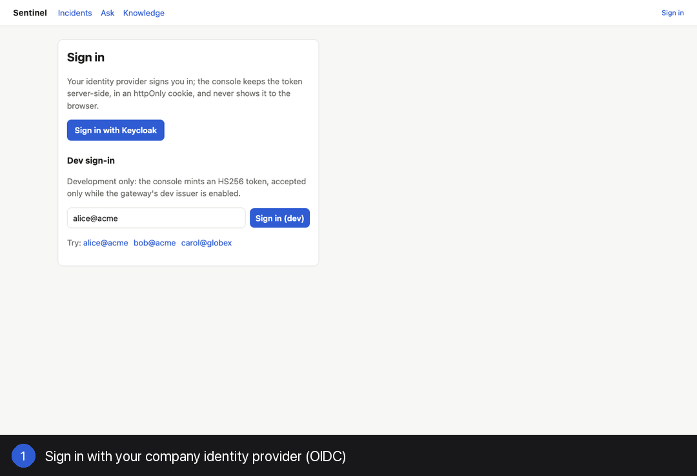
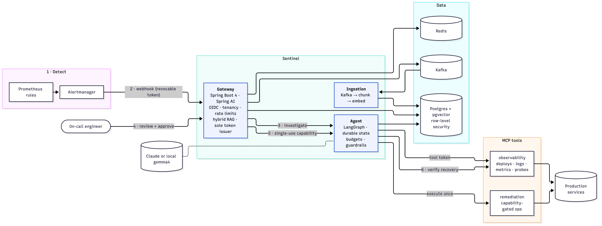

An agentic incident-response copilot that closes the loop: the alert opens the incident, an agent investigates and cites its evidence, a human approves, the fix runs exactly once, and recovery is verified.

Airliners don't rely on a pilot's nerve at 3 a.m. On-call engineers shouldn't have to either.
When something fails in a modern airliner, Airbus's ECAM and Boeing's EICAS show the alert, the affected systems and the checklist to run, and Airbus's flight-envelope protection stops inputs outside safe limits. The pilot stays in command; the automation keeps the right next step in front of them, so stress, fear or fatigue don't turn a manageable failure into a reactive one.
Production incidents have the same shape: paged at night, dashboards screaming, the fast reactive move is tempting (roll back whatever deployed last, restart everything). Sentinel brings the cockpit discipline to on-call:
| In the cockpit | In Sentinel |
|---|---|
| Failure alert with the affected systems (ECAM / EICAS) | The alert opens an incident; the agent gathers deploys, logs, metrics and runbooks |
| The right checklist for this failure | One proposed action, every claim cited to evidence |
| Envelope protection: unsafe inputs are blocked | Policy interlocks block unsafe actions even when proposed |
| The pilot decides | Nothing runs until a human approves |
| Exactly the commanded input, nothing more | A single-use capability executes exactly the approved action, once |
| Instruments confirm the recovery | Real-traffic probes verify health before "resolved" |
| The flight data recorder | Audit trail, timeline and auto-written postmortem |
The goal isn't to replace the engineer. It's to make the calm, correct call the easy one, at any hour. Sentinel is not affiliated with Airbus or Boeing; the comparison describes a design philosophy.

| Phase | Outcome |
|---|---|
| 1 · Foundation | Gateway ↔ LangGraph agent ↔ chaos-lab; human approval; tenancy from the JWT |
| 2 · Ingestion + RAG | Kafka ingestion; hybrid retrieval; row-level security by a non-superuser role |
| 3 · Agents | MCP tool servers, downscoped tokens, budgets, durable checkpoints |
| 4 · Evaluation | Replayed-incident benchmark as a CI gate; found the 16% harmful-rollback bug |
| 5 · Hardening | Guardrails + injection tier, Redis limits, semantic cache, tracing, load tests |
| 6 · Ship | Console, Helm on Kubernetes, Terraform for AWS, CI |
| 7 · Close the loop | Alerts open incidents; capability-gated execution; verification; time to mitigate |
| 8 · Zero trust | ES256 + JWKS, OIDC, every hop authenticated, checkpoint RLS |